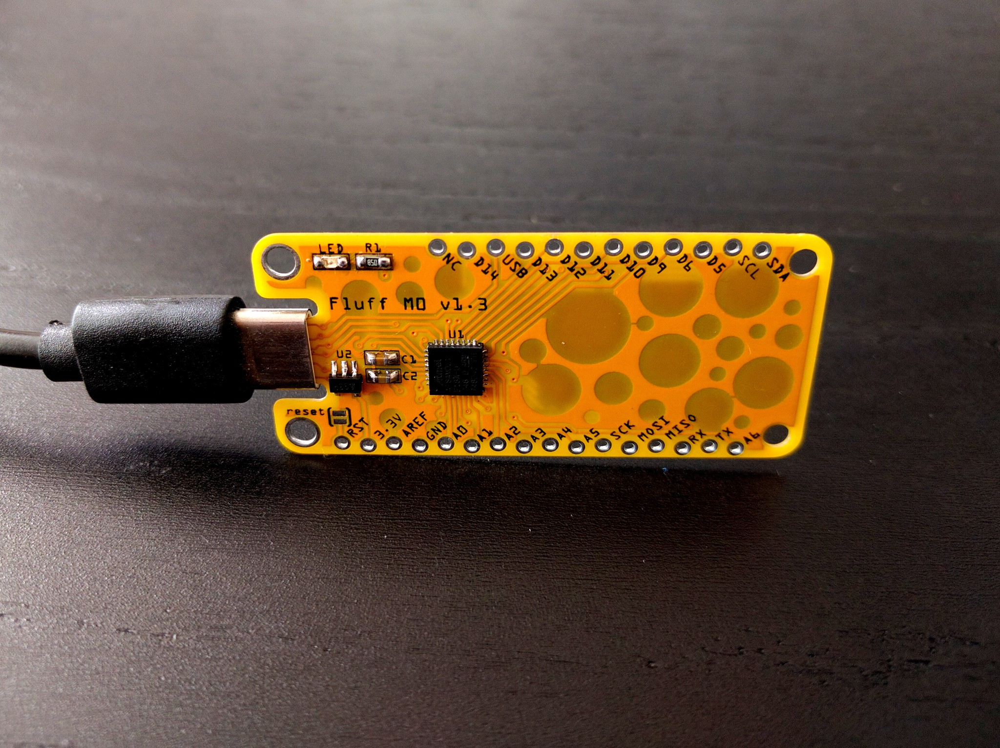

Version 1.3 Testing¶
Published on 2020-07-02 in Fluff M0.
The PCBs arrived after their 3-week trip around the Europe, and as usual I assembled and tested one. The good news is that it works very well with any USB-A to USB-C cable. The plug is a bit wobbly, because there is no metal sleeve to stabilize it, but it doesn’t disconnect or otherwise cause problems. The CNC router was even precise enough to mill the small teeth on the sides of the socket, so it goes in with a slight click. I’m pretty happy with that.\
The bad news is that it completely fails to work when connected to an actual USB-C socket with a proper USB-C cable. It simply doesn’t receive any power. A little bit of research easily explains why: I didn’t add pull-downs on the CC1 and CC2 pins, because I thought it’s only needed for OTG devices. Turns out that the wording is a bit confusing, and it’s required to have those resistors for USB 2.0 device to receive any power from an USB-C port.
That means there will be version 1.4 of the board, and it means the parts count also raises — I need to squeeze 2 more resistors in there. I could probably get away with just one resistor — only one of CC1 or CC2 is ever connected — but I will make room for two, and use a bodge wire to see if it works also with one — I will need fewer prototypes that way.\